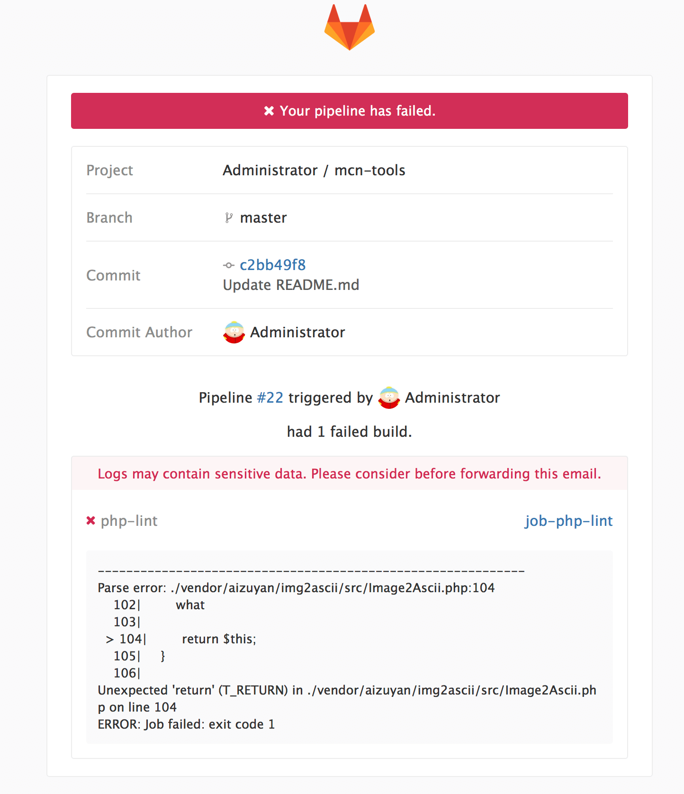

gitlab-ci-cd之（六）——CI-CD结合项目
当然了，CI/CD功能就是为项目服务的，我们有了它可以做些什么呢
这里注意一点，runner运行的时候，会将当前项目clone下来，当前环境就是clone之后的项目的根目录。
PHP语法校验
PHP语法检测，当我们提交代码的时候，对项目中的PHP代码进行语法检测。
在[02-docker私有仓库安装]中，我们已经建立了一个php镜像，里面安装了parallel-lint，他就是用来语法检测的，因此加入他就可以进行语法检测了。1
2
3
4
5
6
7
8stages:
- php-lint
job-php-lint:
stage: php-lint
script:
- parallel-lint .
tags:
- php
现在我新建一个项目，然后composer require aizuyan/img2ascii拉下来代码做测试，提交之后，可以看到，runner的运行结果：
当我们误修改了一个文件或者可能出现了像上次马蜂窝的那个生产环境未完全merge的代码的时候，就能提早知道，如果配置了邮件服务的话的话，你还会受到一封邮件，提示你错误信息

PHP规范检测
我们还可以对代码规范进行解析，比如函数内代码行数限制、每行代码长度限制进行检测，让我们的代码可读性更高，可维护性更高，这些可以通过PHP静态分析类库PHP-Parser实现。
将实现好的工具继承到image中，或者放到代码根目录，配置job就可以了。
PHP单元测试
除此之外呢，我们也可以结合PHPUnit做单元测试，phpunit命令已经京城到前面的image中了，我们只需要在项目代码中按照规则写好测试用例，然后加一个job，每次执行就行了。
- 本文链接：http://www.5aikid.com/2018/08/14/gitlab-ci-cd之（六）——CI-CD结合项目/
- 版权声明：The author owns the copyright, please indicate the source reproduced
分享